Projekttafel Berufsausbildungszentrum in Kabul
Bildung statt Perspektivlosigkeit.
In Kabul entsteht ein Berufsausbildungszentrum für Waisen und sozial benachteiligte Kinder und Jugendliche. Sieben Handwerksberufe, ein Wohnheim, Schulunterricht. Die Teilnahme ist kostenlos. Sie sehen hier den Anfang.

- 1 Werkstätten
- 2 Wohnheim
- 3 Lehrküche
- 4 Unterricht
- 5 Sportplatz
- Erledigt: 2009Verein in KasselBesteht seit 2009 · Amtsgericht Kassel, VR 4808
- Gemeinnützigkeit anerkanntFinanzamt Kassel, Bescheid nach § 60a AO
- Läuft: 2026Zentrum im AufbauEinrichtung und Ausstattung in Kabul
- Folgt: folgtErste BerichteMit Beginn der Einrichtung – mit Beleg und Datum
01 Stand der Dinge
Sie sehen hier den Anfang.
Das Zentrum ist im Aufbau. Wir zeigen keine Fotos, weil es noch keine gibt, und keine Zahlen, die wir nicht belegen können. Was es gibt: einen Verein, der seit 2009 besteht, seit dem 9. Juni 2026 als gemeinnützig anerkannt ist und mit diesem Projekt seine Arbeit in vollem Umfang aufnimmt.
Diese Seite wächst mit dem Zentrum. Jeder Schritt, den wir hier eintragen, ist belegt.
Aktuelles · Berichte
Erste Berichte folgen mit Beginn der Einrichtung.
Bis dahin steht hier nichts, was nicht stimmt. Was wir heute schon zeigen können: das Raumprogramm, die Berufe, den Vorstand und die Regeln, nach denen wir mit Ihrem Geld umgehen.
02 Was wir tun
Werkstatt, Wohnheim, Schule, Betreuung – an einem Ort.
In Kabul richten wir ein Berufsausbildungszentrum für Waisen und sozial benachteiligte Kinder und Jugendliche ein – und betreiben es. Die Teilnahme ist kostenlos.
Wer hier lernt, bekommt mehr als eine Werkstatt: Unterkunft, Verpflegung, Grundschulunterricht und psychosoziale Betreuung. Für Waisen ist das Wohnheim kein Schlafplatz, sondern ein Zuhause.
In die Werkstatt geht niemand vor dem gesetzlich zulässigen Mindestalter. Jüngere Kinder erhalten Grundbildung und vorbereitende Kurse. Am Ende steht für jeden Absolventen ein Abschlusszertifikat – und Unterstützung bei der Vermittlung in Arbeit.
Aus Kindern ohne Perspektive werden Fachkräfte, die ihre Familien versorgen und später selbst ausbilden.
03 Ausbildungsberufe · Legende
Sieben Berufe. Jeder mit eigener Werkstatt.
Praxisnah, mit Abschlusszertifikat. Die Ausbildungsdauer richtet sich nach dem Beruf: sechs bis achtzehn Monate.
-
01
Metallbau und Schweißen
Werkstatt 01
-
02
Elektroinstallation
Werkstatt 02
-
03
Heizung und Sanitär
Werkstatt 03
-
04
Motorradmechanik
Werkstatt 04
-
05
Schreinerei und Tischlerei
Werkstatt 05
-
06
Kochausbildung
Lehrküche
-
07
Bauarbeiten
Malen, Fliesen, Mauern
-
Ausbildungsdauer
6 bis 18 Monate, je nach Beruf.
Am Ende: ein Abschlusszertifikat und Unterstützung bei der Vermittlung in Arbeit.
04 Raumprogramm
Ein Zentrum, das Wohnen und Lernen nicht trennt.
Wer keine Familie hat, braucht zuerst einen Ort. Das Zentrum bietet, was ein Kind braucht, das niemanden mehr hat: einen Platz zum Schlafen, Essen, Lernen und Arbeiten – und Menschen, die zuhören.
- R-01
Werkstätten
Eine für jeden der sieben Ausbildungsberufe.
- R-02
Wohnheim mit Schlafräumen – für Waisen ein Zuhause
Unterkunft und Verpflegung während der gesamten Ausbildung.
- R-03
Lehrküche und Essbereich
Ausbildungsort für die Kochausbildung und Mittelpunkt des Tages.
- R-04
Unterricht
Grundschulunterricht und Wertevermittlung – für die Jüngeren auch vorbereitende Kurse.
- R-05
Psychosoziale Betreuung
Zuhören gehört zum Programm.
- R-06
Sportplatz
Bewegung, Mannschaft, Ausgleich zur Werkstatt.
- R-07
Sicherheitsschulungen
Arbeitssicherheit gehört zu jeder Werkstatt.
05 Wirkung
Aus einem Kind ohne Aussicht wird eine Fachkraft, die selbst ausbildet.
Das ist der Weg, den das Zentrum vorzeichnet. Qualifizierte Fachkräfte versorgen ihre Familien – und geben ihr Handwerk weiter. Für die Vermittlung in Arbeit arbeiten wir mit lokalen Behörden und Betrieben zusammen.
Grundbildung
Schulunterricht, Wertevermittlung, vorbereitende Kurse – ab dem ersten Tag.
Werkstatt
Praktische Ausbildung ab dem gesetzlich zulässigen Mindestalter, 6 bis 18 Monate.
Zertifikat
Ein Abschlusszertifikat für jeden Absolventen.
Arbeit
Vermittlung in Betriebe – zusammen mit lokalen Behörden und Betrieben.
- Und später: selbst ausbilden.
06 Über uns
Ein Verein aus Kassel. Unabhängig seit 2009.
Die Helfende Hand für Afghanistan e. V. ist ein gemeinnütziger Verein aus Kassel. Wir sind unabhängig, nicht-politisch und ausschließlich humanitären und bildungsbezogenen Zwecken verpflichtet – an keine Partei, Bewegung oder Regierung gebunden.
Unsere Arbeit wird vollständig aus privaten Spenden finanziert. Mit dem Berufsausbildungszentrum in Kabul nimmt der Verein seine Arbeit in vollem Umfang auf.
انجمن «دست یاری برای افغانستان»
Vereinsname in Dari
Vorstand nach § 26 BGB
- 1. Vorsitzender
Dr. Yama Aref
Arzt
- 2. Vorsitzender
Salih Tasdemir
Landesleitung Afghanistan
- Kassenwart
Orhan Atmaca
Zwei Vorstandsmitglieder vertreten den Verein gemeinsam.
07 Transparenz
Jede Ausgabe hat einen Beleg.
Wir beschaffen selbst und bezahlen Lieferanten direkt. Keine Barzahlungen ohne Beleg, keine Zahlungen außerhalb des beschlossenen Budgets. Das ist kein Versprechen für später, sondern die Regel, nach der wir jetzt arbeiten.
Anerkannt durch das Finanzamt Kassel
Bescheid vom 09.06.2026. Förderung von Entwicklungszusammenarbeit, Jugendhilfe sowie Erziehung, Volks- und Berufsbildung.
Amtsgericht Kassel
Eingetragener Verein mit Sitz in Kassel. Zwei Vorstandsmitglieder vertreten gemeinsam.
Zuwendungsbestätigung nach amtlichem Muster
Spenden sind steuerlich absetzbar. Sie erhalten eine Zuwendungsbestätigung nach amtlichem Muster.
Jede Ausgabe wird dokumentiert
Wir beschaffen selbst und bezahlen Lieferanten direkt – keine Barzahlungen ohne Beleg, keine Zahlungen außerhalb des beschlossenen Budgets.
08 Fragen
Was Sie wissen sollten, bevor Sie spenden.
F-01Warum Berufsausbildung?
Weil ein Beruf trägt. Aus Kindern ohne Perspektive werden qualifizierte Fachkräfte, die ihre Familien versorgen und später selbst ausbilden können. Deshalb richten wir kein reines Heim ein, sondern ein Zentrum, in dem Wohnen, Schule und Werkstatt zusammengehören.
F-02Wer darf teilnehmen?
Waisen und sozial benachteiligte Kinder und Jugendliche in Kabul. Die Teilnahme ist kostenlos. In die Werkstatt geht niemand vor dem gesetzlich zulässigen Mindestalter; jüngere Kinder erhalten Grundbildung und vorbereitende Kurse.
F-03Wer kontrolliert das Geld?
Der Vorstand in Kassel. Zwei Vorstandsmitglieder vertreten den Verein gemeinsam, der Kassenwart führt die Bücher. Zahlungen außerhalb des beschlossenen Budgets gibt es nicht.
F-04Wie werden Ausgaben belegt?
Jede Ausgabe wird belegt und dokumentiert. Wir beschaffen selbst und bezahlen Lieferanten direkt. Barzahlungen ohne Beleg gibt es nicht.
F-05Ist meine Spende steuerlich absetzbar?
Ja. Der Verein ist vom Finanzamt Kassel als gemeinnützig anerkannt (Bescheid nach § 60a AO vom 09.06.2026). Sie erhalten eine Zuwendungsbestätigung nach amtlichem Muster.
F-06Wie steht der Verein zu Politik und Religion?
Unabhängig. Wir sind an keine Partei, Bewegung oder Regierung gebunden und ausschließlich humanitären und bildungsbezogenen Zwecken verpflichtet.
F-07Warum zeigen Sie keine Fotos?
Weil das Zentrum im Aufbau ist – und weil wir Kinder schützen. Auch später zeigen wir keine erkennbaren Gesichter und keine Namen von Teilnehmern.
09 Mitmachen
Drei Wege, das Zentrum zu tragen.
Steuerlich absetzbar, mit Zuwendungsbestätigung.
Vollständig aus privaten Spenden finanziert – jede Ausgabe belegt.
Spenden Zuwendungsbestätigung nach amtlichem MusterNatürliche und juristische Personen.
Schriftlicher Aufnahmeantrag, über den der Vorstand entscheidet.
Mitglied werdenFragen zum Projekt, zur Satzung, zur Mittelverwendung.
Wir antworten per E-Mail.
info@helfende-hand-afg.de